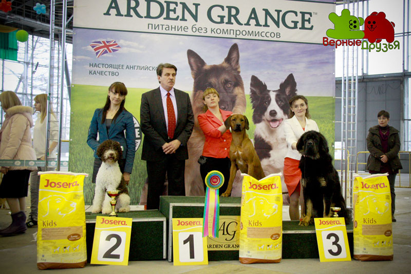
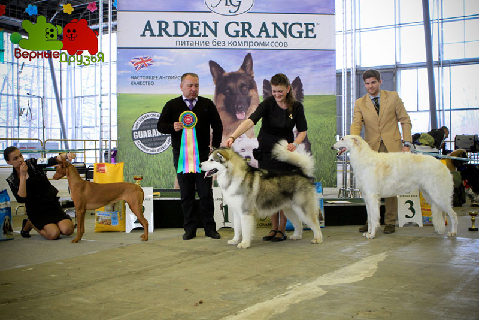

ВСЕПОРОДНАЯ ВЫСТАВКА РАНГА ЧЕМПИОН РКФ
26-27 АПРЕЛЯ 2014 ГОДА
ВВЦ (павильон 57)
BEST IN SHOW
судья ZEEV TRAININ (Израиль)
1 место: сибирский хаскиBRIGHT COLOUR DREAM SPEIGAS, , вл. Розанова
2 место: ризеншнауцер GENTLY BORN PRINCE,, вл. Fingerhut Frank
3 место: салюки AL NAFISEH DA`IM, Зайковская
ГРУППЫ
I группа
судья SONIA KELVERI PHILIPPOU (Кипр)
1 место: вельш корги пемброк ХАЙЛАЙТ`С АФИНА, вл. Шведова Н.
2 место: австралийская овчарка СЕВЕНТИ СЕВЕН САН ФРОМ ДАЙМОНД, вл. Королева Е.
3 место: мареммо-абруцкая овчарка , вл.Громов С.

II группа
судья ZEEV TRAININ (Израиль)
1 место: ризеншнауцер GENTLY BORN PRINCE,, вл. Fingerhut Frank
2 место: русский чёрный терьер KREMLEVSKIY LUBOSLAVA, вл. Перегудов И.
3 место: цвергшнауцер чёрный АРМАЛЬД ТАНГО ДРИМ, вл.Рыковская Н.

III группа
судья SVANTE FRISK(Швеция)
1 место: американский стаффордширтерьер ZARIEL DE LAKRUAT, вл. Царева
2 место: бордер терьер , MEADOWLAKE BLACK & GOLD FOR OPTIMISTIK BORDER, вл. Секач Е.
3 место: джек рассел терьер ЭМБЭР КРАУН ХЕНРИ ДЖЕКСОН,вл. Курилова Е.

IV группа
судья ZAFRA SIRIK(Израиль)
1 место: такса кроличья г/ш НОРДЕН ЛИХТ АЛКИРИ, вл. Яковлева, Безрукова
2 место: такса миниатюрная г/ш DAKSREVJU IMPERIA CHOCO, , вл. Кашинская А.
3 место: такса ж/ш ГЕРМАНИКА ГОЛД ИЗ НОВО-ПЕРЕДЕЛКИНО, вл. Гадалов А.

V группа
судья SONIA KELVERI PHILIPPOU (Кипр)
1 место: сибирский хаскиBRIGHT COLOUR DREAM SPEIGAS, , вл. Розанова
2 место: немецкий цвергшпиц/померанский шпиц THAI SILK EASY WAY TO MY HEART, , вл. Thio William
3 место: : самоед , DORIAN SPRING NUMBER ONE, , вл. Лапин М.

VI группа
судья SONIA KELVERI PHILIPPOU (Кипр)
1 место: бигль
2 место: родезийский риджбек INTER DHAHABU NTANDA вл. Борун В.
3 место: бассет-хаунд КОЛАНИ ЖАК-СИЛЬ БРАТИСЛАВА вл. Юдин Е.

VII группа
судья ZAFRA SIRIK(Израиль)
1 место: веймаранер БЕЛЬФЕГОРУС ЦОЙ ЧРИСТИАН ГРЕЙ, вл. Кругликова С.
2 место: ирландский красный сеттер DUBLINER JETSETTER COCO CHANEL, вл.Исаенко И.
3 место: сеттер гордон GORDON HALL ZAVIER,вл. Севрук А.

VIII группа
1 место: американский кокер-спаниель KHAFKA`S GOING IN STYLE, вл. Евграшина Е.
2 место: -,
3 место: - ,

IX группа
судья SONIA KELVERI PHILIPPOU
1 место: ши-тцу SAFFRON SHERHY OBAMA, , вл. Черкасова, Мезенцева
2 место: пудель миниатюрный белыйМОЯ ОТРАДА ЧАРЛИТА, , вл. Жникруп Т.
3 место: чихуахуа гладкошерстныйСИБИРСКИЙ БРЕНД ЮРС ФОРЕВЕР,вл. Воробьева Е.

X группа
1 место: салюки AL NAFISEH DA`IM, вл. Соловьева, Зайковская
2 место: грейхаунд FIONN CLANN KINTHIA вл. Кривцова Е.
3 место: уиппет SOBERS MAGNOLIA вл. Шеина М.

........................
ЛУЧШИЙ БЭБИ 26 АПРЕЛЯ
судья SVANTE FRISK
1 место: французский бульдог SORMADI MAGIC вл. Гурин К.
2 место: немецкий цвергшпиц/померанский шпиц САЛЬСА ПОМ АНЖЕЛ КИСС МАЙ ДОМИНИКА,вл. Кузнецова Е.
3 место: сибирский хаски XING XING, вл. Hartig Nicole

ЛУЧШИЙ БЭБИ 27 АПРЕЛЯ
судья ANIKO JUHASZ ISTVANNE (Венгрия)
1 место: бернский зенненхунд ELENBERNER BORN-TO-WIN,вл. Королева, Зайцева
2 место:староанглийская овчарка ЧУДНЫЙ МЕДВЕЖОНОК ОСЛЕПИТЕЛЬНЫЙ ФУРОР, вл. Виноградова Е.
3 место: доберман НЕВСКИЙ ЦЕРБЕР ДЕВИ ДОМИНИКА,, вл. Толканюк Н.
ЛУЧШИЙ ЩЕНОК 26 АПРЕЛЯ
судья ZAFRA SIRIK
1 место: сибирский хаски ФРОСТИ ЧЕМПИОНС КИНГ ОФ МАЙ ЛИВЕ,вл. Розанова В.
2 место: уиппет МИСТИК`С ТРЕЖУР вл. Овчинникова П.
3 место: американская акита БОРН ТО ВИН ФОР РУССТАР вл. Балашова С.

ЛУЧШИЙ ЩЕНОК 27 АПРЕЛЯ
судья SONIA KELVERI PHILIPPOU
2 место: цвергпинчер ГРАНТ БРИТТ МАРЦИПАН,вл. Никитин В
3 место: цвергшнауцер РУССКИЙ АССОРТИК Я ШОУМЕН, , вл. Виноградова В.
ЛУЧШИЙ ВЕТЕРАН 26 АПРЕЛЯ
1 место: фараонова собака РИДЛИ РОАД БАББЛ ГАМ, вл. Ляшенко Е.
2 место: американский кокер-спаниель KHAFKA`S GOING IN STYLE, вл. Евграшина Е.
3 место: сибирский хаски O`ROSS EZHEVIKA, вл. Королева Л.

ЛУЧШИЙ ВЕТЕРАН 27 АПРЕЛЯ
судья SVANTE FRISK
1 место: ирландский мягкошерстный пшеничный терьерWHEATENGALE KINTERRA, вл. Карякина Е.
2 место: московская сторожевая YARUSSIYA, вл. головина Е.
3 место:
ЛУЧШИЙ ЮНИОР 26 АПРЕЛЯ
судьяZEEV TRAININ
1 место: грейхаунд FIONN CLANN KINTHIA вл. Кривцова Е.
2 место: американский кокер-спаниель KHAFKA`S GOING IN STYLE, вл. Евграшина Е.
3 место: басенджи ANGEL CONGO MAISHA MBARUKU,вл. Журавлева, Башилова

ЛУЧШИЙ ЮНИОР 27 АПРЕЛЯ
судьяZAFRA SIRIK
1 место: ризеншнауцер GENTLY BORN PRINCE,, вл. Fingerhut Frank
2 место: американский стаффордширтерьерZARIEL DE LAKRUAT, вл.Царева
3 место: бигль, ХОТТИ-ТОТТИ ПИНО КОЛЛАДО, вл. Лазарев Е.

ЛУЧШАЯ ПАРА 26 АПРЕЛЯ
1 место: сибирский хаски, вл. Розанова
BRIGHT COLOUR DREAM SPEIGAS & BALADA BOA OF POLIARINE ARKTIKA
2 место: басенджи, вл. Журавлёва
KAZOR`S PRIME TICKET && ANGEL CONGO MAISHA MBARUKU
3 место:
SHOW MUST GO ON FOR BULL STRONG & ВЛАДЫКА МОСКОВИИ АКА БУЛЛСТРОНГ

ЛУЧШАЯ ПАРА 27 АПРЕЛЯ
судья SVANTE FRISK
1 место: такса кроличья г/ш, вл. Яковлева
НОРДЕН ЛИХТ ЕГОИСТ & НОРДЕН ЛИХТ АЛКИРИ
2 место: ирландский красный сеттер, вл. Исаенко
СЕВЕНТИ СЕВЕН САН ФРОМ ДАЙМОНД & SEVENTY SEVEN SINING BLACK
3 место: австралийская овчарка, вл. Королёва
ЛУЧШИЙ ПИТОМНИК 27 АПРЕЛЯ
судья ANIKO JUHASZ ISTVANNE
1 место: такса кроличья г/ш, "НОРДЕН ЛИХТ", вл. Яковлева
2 место: ньюфаундленд, "СЕВЕРТАН", вл. Витковская
КОНКУРС ПРОИЗВОДИТЕЛЕЙ 27 АПРЕЛЯ
судья FRAN FRICKER
1 место: ньюфаундленд, ПЛЮШЕВАЯ ПАНДА ИВАР, вл. Витковская
ГОРДОСТЬ РОССИИ 26 АПРЕЛЯ
судья ZEEV TRAININ
русская псовая борзая, DONSKOI EGLON, вл. Коршунова

ГОРДОСТЬ РОССИИ 27 АПРЕЛЯ
судья ZAFRA SIRIK
русский черный терьер, KREMLEVSKIY LUBOSLAVA, вл. Перегудов И.